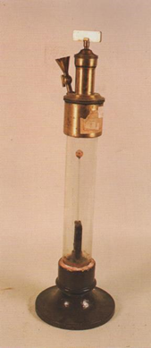

Piezometro di Oersted
Scuola di provenienza: Liceo Classico "P. Colletta", Avellino
Settore: Meccanica
Costruttori: G. R. Duroni, Roma, Italia
Materiali: Vetro, ottone, ferro, mercurio
Accessori: Nessuno
Stato di conservazione: Buono, base rconsumata dal calcare
Descrizione: È un apparecchio che serve a misurare la debole compressibilità dei liquidi. Consiste in un recipiente a robuste pareti di vetro riempito completamente d´acqua ed ermeticamente chiuso, inserito in una solida base di ottone e sormontato da un´armatura, anch´essa in ottone, dotata di uno stantuffo verticale comandato da una vite a tenuta, e, lateralmente, di un rubinetto che permette la comunicazione con l´ambiente interno. Inoltre è formato da un´ampolla di vetro congiunta ad un capillare e collegata sia ad un termometro sia ad un manometro ad aria compressa. In esso è collocato un bulbo in cui è inserito il liquido da analizzare, che termina con un tubo capillare immerso in un recipiente contenente mercurio. Riempiendo d´acqua, che funge da liquido piezometrico, il recipiente cilindrico si esercita su di esso una forte pressione abbassando, tramite la vite, lo stantuffo. Tale pressione si trasmette con la stessa intensità sia sulla parete esterna dell´ampolla sia, attraverso la goccia di mercurio, su quella interna. Lo spostamento del mercurio nel capillare verso l´ampolla non solo evidenzia la comprimibilità del liquido in essa contenuto ma permette anche di misurare il grado di comprimibilità in funzione della pressione indicata dal manometro. Una volta ristabilita la pressione iniziale, aprendo il rubinetto presente nella parte superiore del dispositivo, il menisco nel capillare torna nella posizione iniziale; da tale comportamento si deduce che i liquidi, oltre che comprimibili, sono dotati anche di elasticità volumetrica.